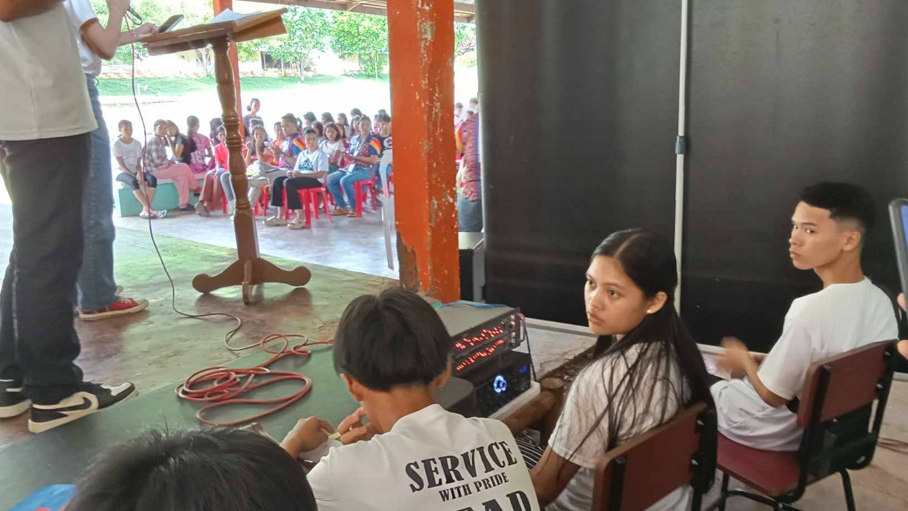
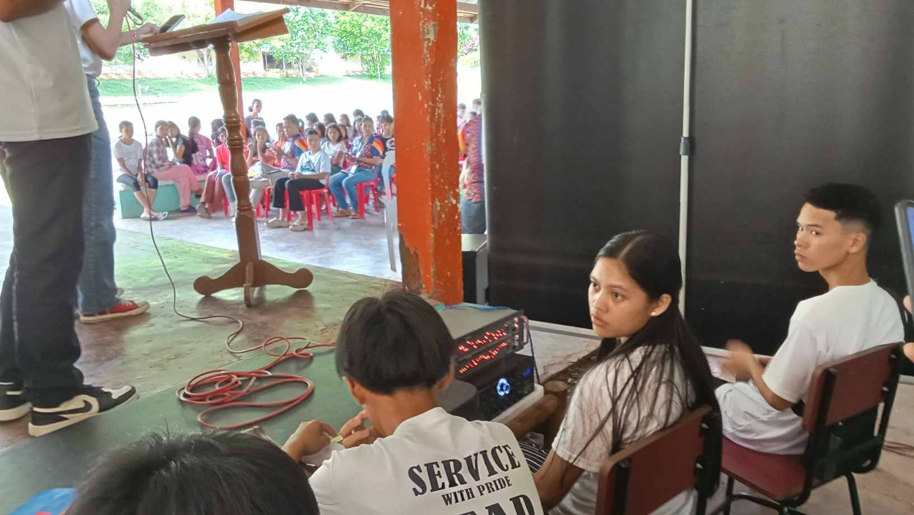
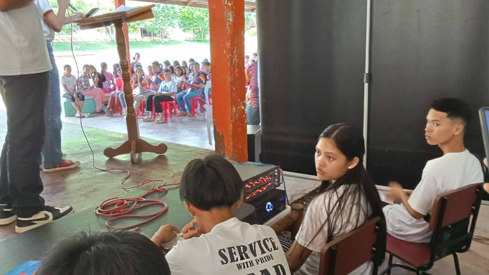

Lending a helping hand, listening to one's suggestions or queries, inspiring, leading, and serving others were once my duties as a student leader.
In my previous school, the Silangit National High School, I were once elected as a member of the Suprem Studemnt Learner Government (SSLG). Being
a student leader means everyday is a challenge, for a reason that you must always be in check. Time management, patience, and perseverance is
one of the principle that I acquired as a student leader. Moreover, the most essential weaspon to resolve any challenges that comes in our organization
is teamwork and not being bias. In this way, I have given the chance to lead, to persevere, to be a great citizen, and to be the voice of the unheard.
As I believe that, being a student leader is about making a positive impact, inspiring others, and leaving a lasting legacy. It's about listening to others,
taking initiative, and empowering your peers to do the same. By being a positive influence and role model, you can create change, build community, and make a
difference in the lives of those around you.
In a saying, "The First Step to Leadership is Servanthood", it will embed in our mind that we're not only born to show off, we are born to serve in
order for us to become a great leader. So don't be afraid to take the risks and step out from your comfort zone as it is often where the greatest growth and opportunities lie.
As a student leader before, this is my advocacy, the advocacy that encourages and urges every aspiring youth to embrace their potential to become a student leader,
the voice of the unheard and the eyes of the unseen. You can be a game-changer and make a lasting impact to your school or community. So be it, Lux Mundi lead the way!
